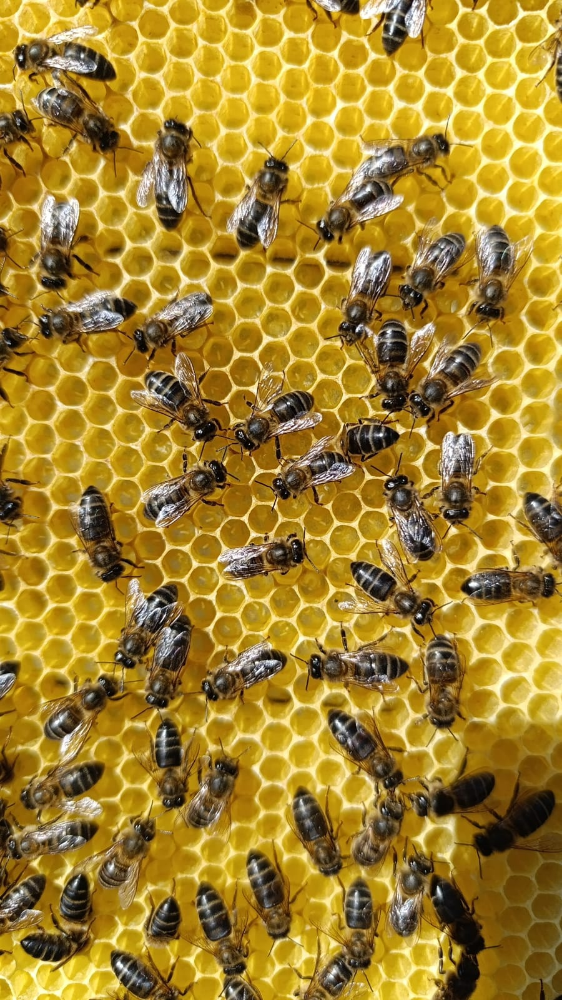
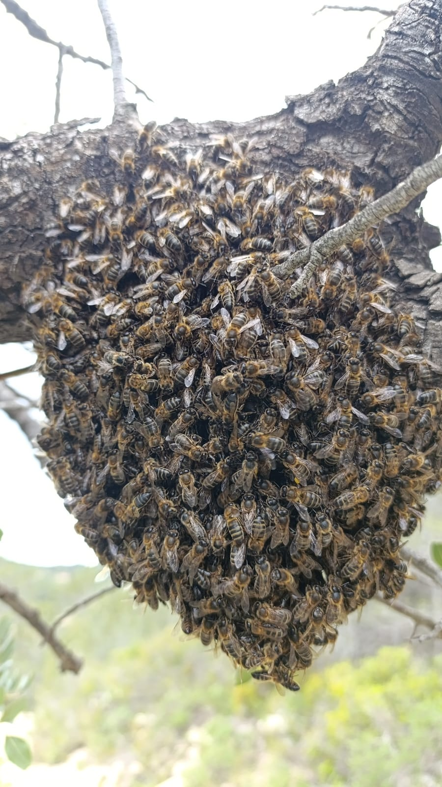
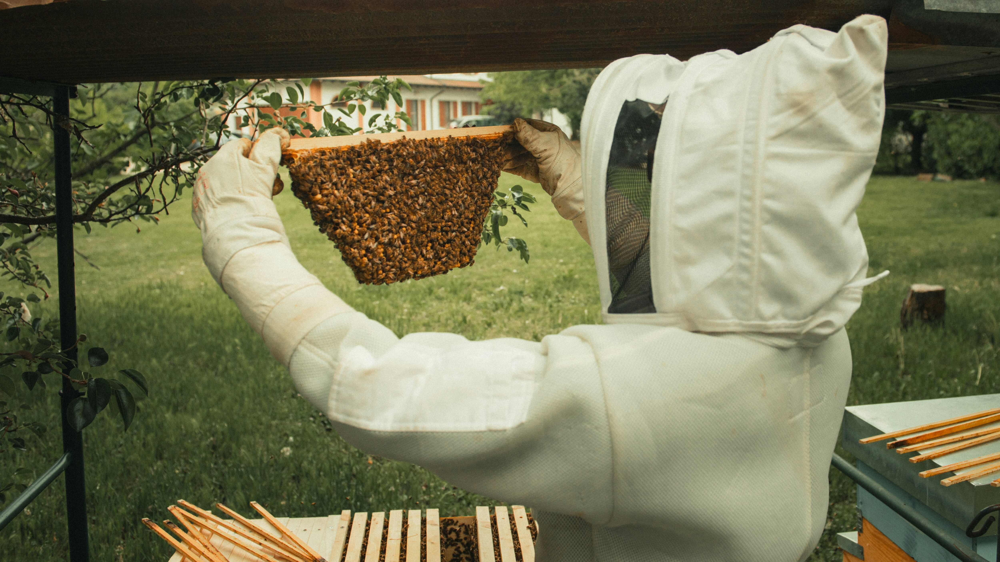
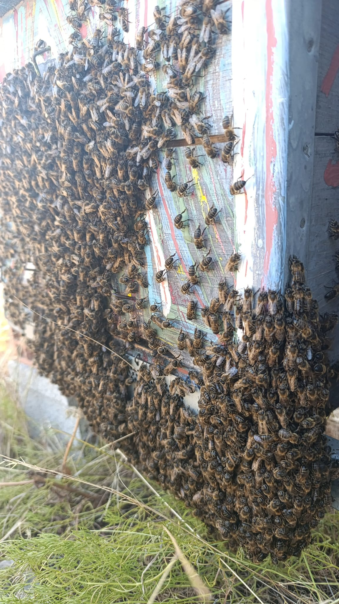
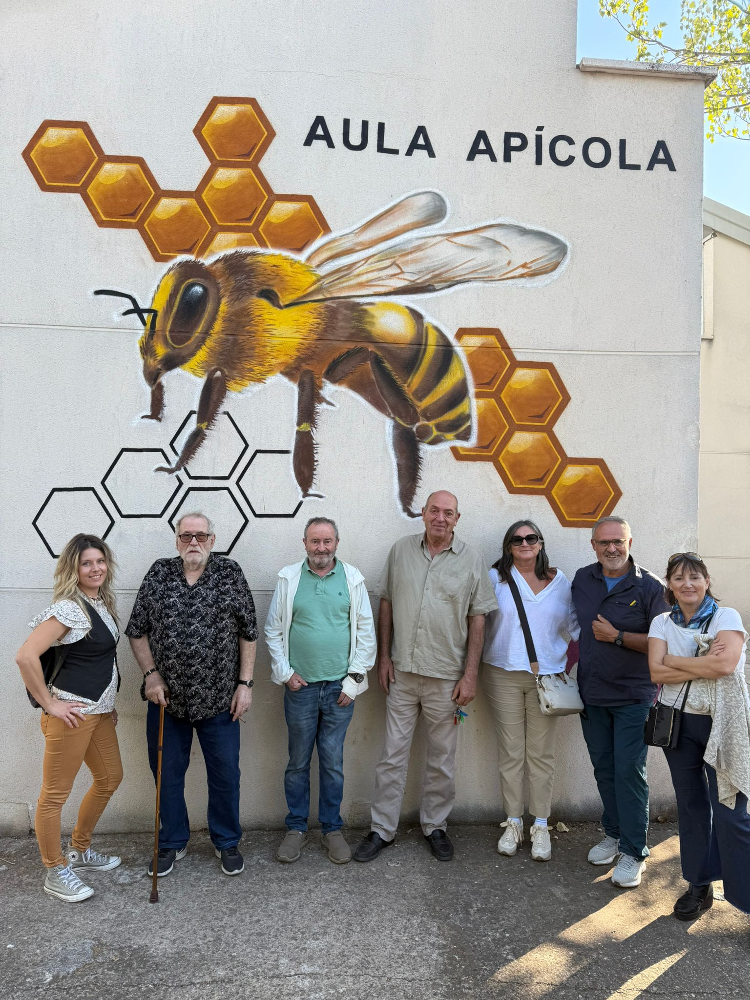
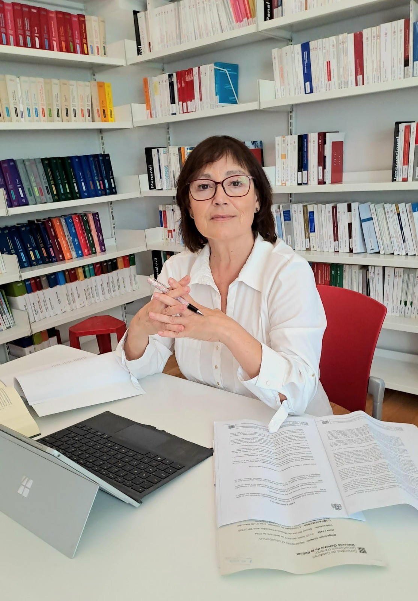
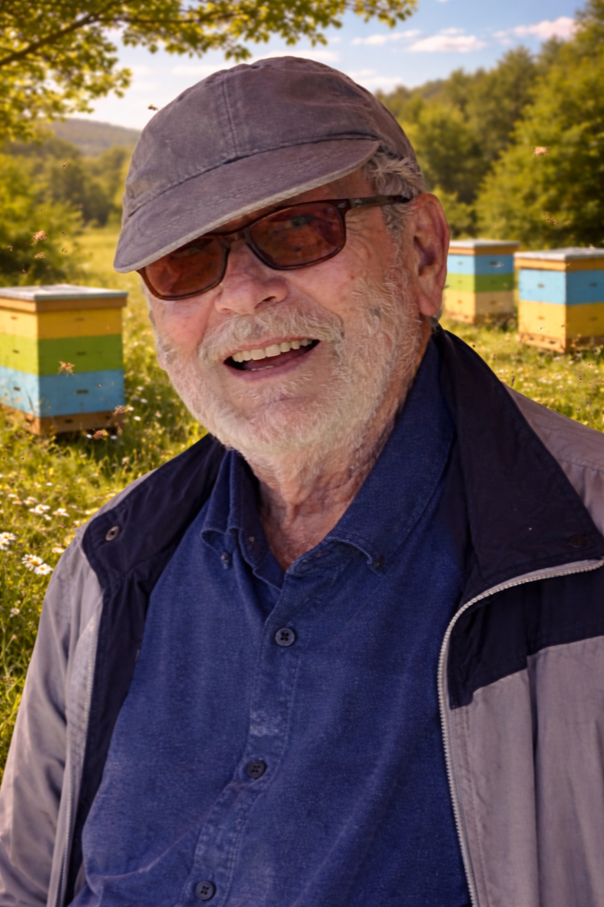
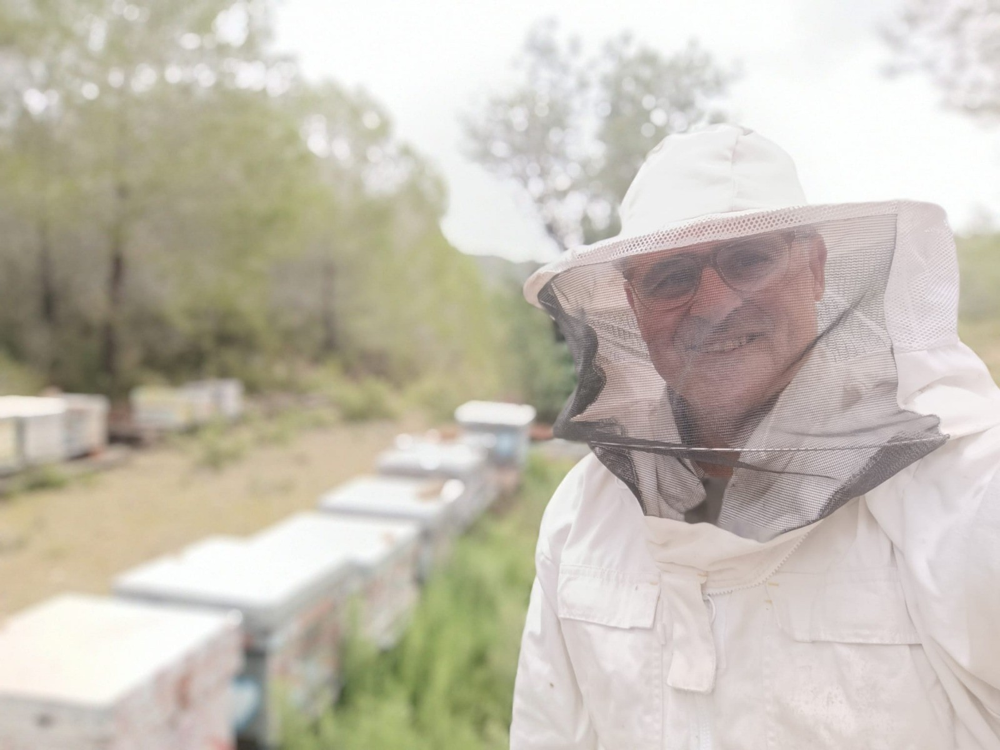
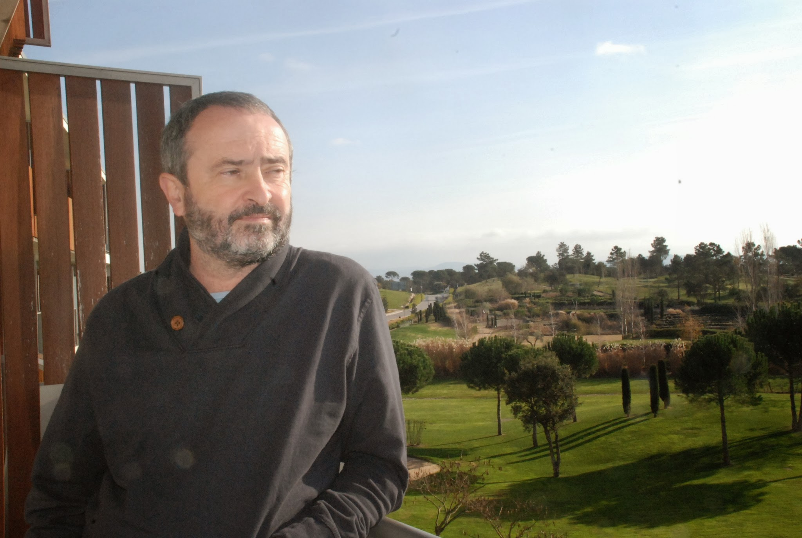
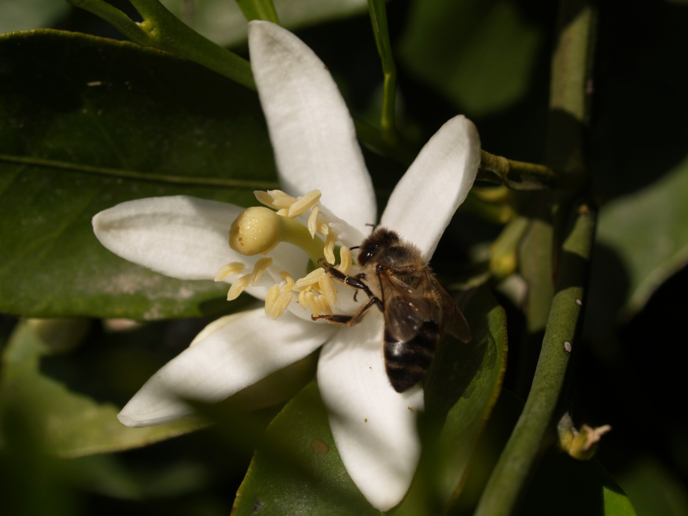

Un legado para las generaciones presentes y futuras
La Fundación Juan José Iglesias Dapena es una entidad sin ánimo de lucro constituida para el beneficio del conjunto de la sociedad, con un firme compromiso con la investigación científica, arte y apicultura, el medio ambiente y, de manera especial, con la protección de las abejas y de la apicultura.
La Fundación nace del interés altruista y del compromiso vital de D. Juan José Iglesias Dapena, una persona profundamente trabajadora que, ante la etapa final de su vida, decidió destinar su patrimonio personal a fines de interés general, dejando un legado duradero para las generaciones presentes y futuras.
Nuestro Primer Gran Objetivo
Contribuir decisivamente a la declaración de la apicultura como Patrimonio Cultural Inmaterial de la Humanidad por la UNESCO, entendiendo la apicultura como una práctica milenaria esencial para la biodiversidad, la soberanía alimentaria y la identidad cultural de nuestros territorios.
Acceso Rápido
Quiénes Somos
Conoce nuestra historia y misión
Nuestros Proyectos
Descubre nuestras iniciativas
Patronato
Conoce a nuestro equipo
Contacto
Ponte en contacto con nosotros
Nuestra Labor en Imágenes

Protección de la abeja ibérica

Talleres de apicultura

Investigación científica

Conservación ambiental

Visita al Aula Apícola
Miembros del Patronato

Antonia Mª Crespo Gálvez - Presidenta
Juvenci Portillo Araujo - Secretario

Juan José Iglesias Dapena - Tesorero

Enric Simó Zaragoza - Vocal nº 1

Joaquim Andrés Carrasco Sáez - Vocal nº 2
Escanea para Compartir
Generando código QR...
Comparte Nuestra Misión
Escanea este código QR para acceder rápidamente a nuestro sitio web desde tu dispositivo móvil.
Comparte nuestro enlace con amigos, familiares o colegas interesados en la protección de las abejas y el medio ambiente.
Nuestros Pilares
Tres áreas fundamentales que definen nuestro trabajo
Investigación Científica
Promovemos la investigación científica, arte y apicultura en medio ambiente, con especial atención a la protección de las abejas y de la apicultura.
Protección de la Biodiversidad
Protegemos la abeja ibérica (Apis mellifera iberiensis) como subespecie autóctona de la península ibérica y su ecosistema.
Artes y Cultura
Apoyamos proyectos de artes y cultura destinados a una pluralidad de personas o colectivos, promoviendo la formación cultural.
QUIÉNES SOMOS
Conoce nuestra historia, valores y compromiso con la apicultura
Nuestra razón de ser
La Fundación Juan José Iglesias Dapena trabaja para proteger la naturaleza, el conocimiento y los valores que sostienen una sociedad justa y sostenible. Creemos que la ciencia, la cultura y la solidaridad deben caminar juntas para generar un impacto real en arte y apicultura, en la conservación del medio ambiente y en la cohesión social.
Especial relevancia adquiere la apicultura y la protección de la abeja ibérica (Apis mellifera iberiensis), como eje donde convergen investigación científica, sostenibilidad ambiental y patrimonio cultural vivo.

Origen y espíritu fundacional
La Fundación lleva el nombre de su fundador como reconocimiento a una vida de esfuerzo, responsabilidad y compromiso social. Su creación responde a la voluntad expresa de transformar un patrimonio individual en un instrumento colectivo de beneficio público, garantizando que dicho legado se oriente a fines científicos, culturales y sociales.
Nuestra Misión
Proteger y promover la apicultura como patrimonio cultural, científico y ambiental, fomentando la investigación, arte y apicultura y la cultura para el beneficio de la sociedad y el medio ambiente.
Nuestra Visión
Ser una fundación de referencia en la protección de la abeja ibérica y la apicultura, reconocida por su contribución al desarrollo sostenible, la investigación científica y la conservación del patrimonio cultural.
FINES Y ACTIVIDADES
Los objetivos fundacionales que guían nuestra labor
Fines Fundacionales (Art. 5 de los Estatutos)
La Fundación persigue los siguientes fines:
1. Investigación Científica
Favorecer la investigación científica en las ramas de arte y apicultura y del medio ambiente, con especial atención a la protección de las abejas y de la apicultura.
2. Protección de la Abeja Ibérica
Proteger la abeja ibérica como subespecie autóctona de la península ibérica.
3. Artes y Cultura
Apoyar proyectos de artes y cultura destinados a una pluralidad de personas o colectivos, promoviendo la formación cultural (música, ópera, literatura y otras disciplinas).
Actividades de la Fundación
Para el cumplimiento de sus fines, la Fundación puede desarrollar, entre otras, las siguientes actividades:
Desarrollo del Plan de Salvaguarda de la Apicultura para su declaración como Patrimonio Cultural Inmaterial de la Humanidad.
Organización de talleres y cursos de formación en apicultura, especialmente en el ámbito rural.
Rescate de colmenas y enjambres.
Apoyo a la explotación y mantenimiento de colmenas de terceros.
Instalación y gestión de apiarios propios con fines científicos y formativos.
Actividades forestales o agrícolas vinculadas a la apicultura.
Ejercicio de actividades económicas necesarias para el cumplimiento de los fines fundacionales.
ORGANIGRAMA DEL PATRONATO
El equipo directivo que guía nuestra labor
Patronato de la Fundación
Es el órgano de gobierno y representación responsable de definir la estrategia y velar por el cumplimiento de los fines fundacionales.
Antonia Mª Crespo Gálvez
Presidenta
Abogada con más de 24 años de ejercicio profesional. Representa legalmente a la Fundación.
Juvenci Portillo Araujo
Secretario
Diplomado en Ciencias Empresariales y formador en el ámbito empresarial.
Juan José Iglesias Dapena
Tesorero
Jubilado. Perito Mercantil. Profesional del transporte metropolitano privado en Barcelona.
Enric Simó Zaragoza
Vocal nº 1
Apicultor, veterinario y biólogo, experto en apicultura.
Joaquim Andrés Carrasco Sáez
Vocal nº 2
Jubilado. Estudios de Periodismo (UAB). Administrativo.
Organigrama de la Fundación
Patronato
Órgano de gobierno
Presidenta
Antonia Mª Crespo Gálvez
Secretario
Juvenci Portillo Araujo
Tesorero
Sr. Juan Jose Iglesias Dapena
Vocal 1
Enric Simó Zaragoza
Vocal 2
Joaquim Andrés Carrasco
Comisión Plan de Salvaguarda de la Apicultura
Comisión especializada para el desarrollo y seguimiento del Plan de Salvaguarda de la Apicultura como Patrimonio Cultural Inmaterial de la Humanidad.
Enric Simó Zaragoza
Coordinador
Joaquim Andrés Carrasco Sáez
Miembro
PROYECTOS DE LA FUNDACIÓN
Iniciativas que transforman nuestra misión en acción
Documento Oficial
Consulta la carta de apoyo del Ministerio de Cultura al expediente de apicultura.
El primer gran proyecto de la Fundación consiste en prestar apoyo, supervisión y seguimiento al proceso iniciado años atrás por D. Enric Simó licenciado en Veterinaria por la Universidad de Zaragoza y en Biología por la Universidad de Valencia, orientado a lograr la declaración de la apicultura como Patrimonio Cultural Inmaterial de la Humanidad por la UNESCO.
Hito Fundamental Alcanzado
Real Decreto de 11 de marzo de 2025, núm. 199/2025, publicado en el BOE el 13 de marzo de 20253, por el que se declara la Apicultura en España como Manifestación Representativa del Patrimonio Cultural Inmaterial. Esta norma reconoce la importancia cultural, histórica y económica de la actividad apícola en España y supone un primer paso hacia su protección y salvaguarda. mediante la declaracion por la UNESCO de la Apicultura como Patrimonio Inmaterial de la Humanidad.
Iniciativa Ciudadana
La iniciativa fue impulsada por Enric Simó Zaragoza, y contó con una amplia movilización social a través de una campaña en Change.org, que ha reunido más de 180.000 firmas de apoyo ciudadano.Para la tramitación del expediente ante el Ministerio de Cultura hemos contado con la inestimable colaboración de D. Joaquim Carrasco Sáez (estudios de periodismo) y de D. Albert Moncusí i Ferrer, (licenciado (1996) i Doctor (2002) en Antropología Social y Cultural por la Universidad Rovira i Virgili (Tarragona) y miembro numerario de la Sección de Filosofía i Ciencias Sociales del Instituto de Estudios Catalanes desde 2021), habiéndose ocupado este último de la elaboración del informe técnico que sirvió de fundamento para la aprobación de la Resolución de 7 de Noviembre de 2024 de la Dirección General de Patrimonio cultural y Bellas Artes, publicada en el BOE de 16 de noviembre de 2024.
BLOG
Un espacio de divulgación, reflexión y participación
El blog de la Fundación es un espacio de divulgación, reflexión y participación, donde se publicarán:
Artículos científicos y divulgativos sobre abejas y apicultura.
Noticias sobre biodiversidad, medio ambiente, arte y apicultura.
Avances del Plan de Salvaguarda.
Opiniones de expertos, apicultores y entidades colaboradoras.
Actividades, talleres y proyectos de la Fundación.
Blog en construcción
Estamos preparando contenido de calidad para nuestro blog. Pronto publicaremos artículos, noticias y actualizaciones sobre nuestros proyectos.
ENCUESTA DE LA FUNDACIÓN
Participa en nuestro estudio sobre apicultura y productos apícolas
¿Tienes fotos de nuestras actividades? ¡Súbelas aquí!
Protección de la Abeja Ibérica
Trabajo en Apiarios
Investigación Científica
Conservación Ambiental
Evento Fundacional
Actividades Comunitarias
Visita al Aula Apícola
CONTACTO Y COLABORACIÓN
Únete a nuestra misión en favor de la vida, la cultura y el medio ambiente
La Fundación Juan José Iglesias Dapena invita a personas, entidades públicas y privadas a colaborar, investigar y participar en sus proyectos, sumando esfuerzos en favor de la vida, la cultura y el medio ambiente.